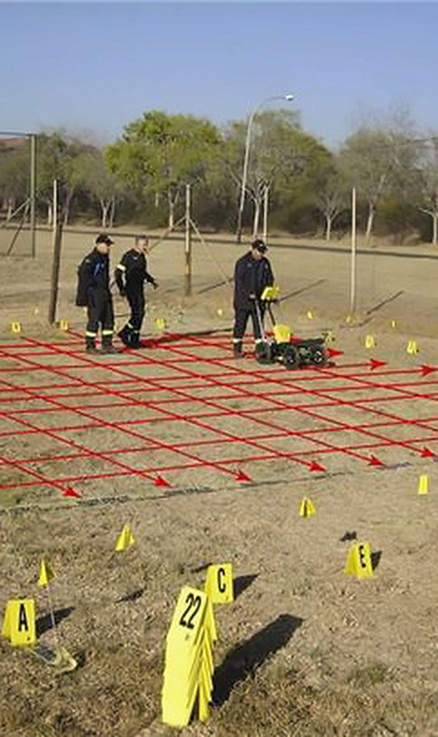
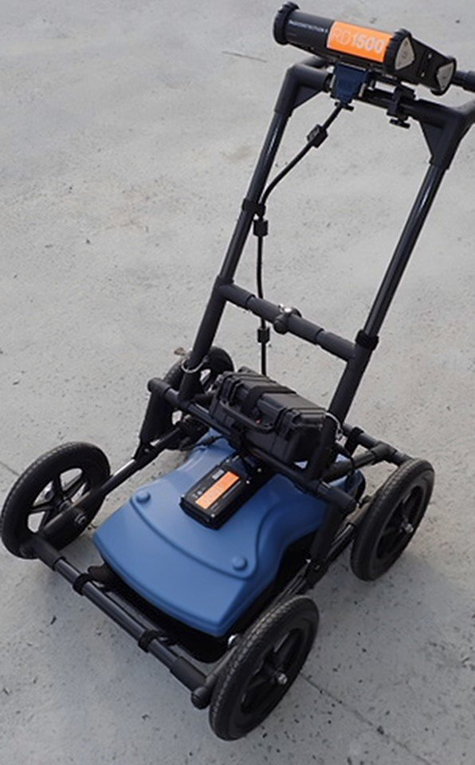

사업분야 · CCTV · GPR
관로·지하 조사 및 보수
관로 내부 CCTV 조사, 지하매설물 GPR 조사, 비굴착 보수를 수행합니다. CCTV 조사차량(D=250~600mm)과 관로 CCTV 로봇을 보유하고 있으며, 하수관거 CCTV 조사를 1년간(2022.01~2022.12) 수행했습니다.
관로 CCTV 로봇 투입이 업무로 문의하기

- 작업 범위
- 관로 CCTV 조사 · 지하매설물 GPR 조사 · 비굴착 보수
- 주요 장비
- CCTV 조사차량(D=250~600mm) · 관로 CCTV 로봇 · 스키드 로더
어떻게 하나요
조사부터 보수까지
- 01관로 CCTV 조사
관로 내부를 대상으로 하는 CCTV 조사 업무입니다.
- 02지하매설물 GPR 조사
지하매설물을 대상으로 하는 GPR 조사 업무입니다.
- 03비굴착 보수
굴착 없이 진행하는 관로 보수 관련 업무입니다.
CCTV 조사차량 2대(D=250~600mm) · 관로CCTV로봇 1대 · 탈취제거 SYSTEM 1SET을 관로 조사용으로 보유하고 있습니다.회사소개서(2024) 22·24쪽 보유 장비
투입 장비
 로봇관로 CCTV 로봇보유 장비표: 관로CCTV로봇 · 관로조사용 1대무인 솔루션에서 보기
로봇관로 CCTV 로봇보유 장비표: 관로CCTV로봇 · 관로조사용 1대무인 솔루션에서 보기 - CCTV 조사차량장비CCTV 조사차량D=250~600mm · 관로조사용 2대
 장비스키드 로더보유 장비표: 스키드 로더 0.52㎡ · 맨홀보수작업 1대
장비스키드 로더보유 장비표: 스키드 로더 0.52㎡ · 맨홀보수작업 1대
현장 사진



일부 사진은 회사소개서(2024) 10~14쪽 주요사업 안내에 실린 사진입니다